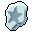
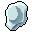
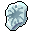
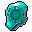
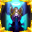

Renascimento
O fim de jogo: refazer o personagem mais forte.
Fim de jogoPhoenix Rebirth
8 runasformam a Rebirth Stone
Nível 70Phoenix · 85 Athene
Asas + skillexclusivas
O renascimento reinicia classe, atributos e habilidades para uma build nova, com asas, habilidade exclusiva e pontos de atributo a mais. São dois: Phoenix Rebirth (nível 70) e Athene Rebirth (nível 85). O nível do personagem não volta.
Phoenix Rebirth passo a passo
- Aceite a Phoenix Rebirth com a Goddess (Pirate Hideout, Heaven 1755, 908), a partir do nível 70.
- Huckinson (Lone Tower 513, 269): acerte as charadas e faça Mark of a Warrior (15 de cada um de 6 monstros). Dá a

Leo Rune. - Hairstylist 3300, 2513: Little Mystery Man, Simple Mission (30 Gigantic Stramonium Flower, 30 Quality Caviar e 30 Compressed Energy II) e quatro Day of Abstinence (vinhos Mao, Dukan e Ginseng).
- Tomas Tutu (Demonic World 2 329, 207): Seek out Demonic Guide dá a

Roico Rune; depois mate Deathsoul Commander, Barborosa e o Kraken no Caribe. O último dá a
Baby Rune. - Tink (Icicle 1335, 469) manda ao Albuda (Shaitan 898, 3640), que pede para escolher o caminho. Trocar depois custa 5 milhões.
- Difícil (Arduous Quest): mate Snowman Warlord, Wandering Soul e Black Dragon. Dá as runas 4 a 8 de uma vez.
- Trabalhoso: Genesis em menos de 30 min, Seal of Aries (com o set Aries vestido), World Tour por 4 portos (Kentaro, Minelli, Willi e Professor Fenny), 9 e 99 Sacred Candles e a Goddess Statue, e por fim Game of Madness (7 vezes 30 monstros), que dá as runas 4 a 8.
- Volte à Goddess com as 8 runas: ela dá a

Rebirth Stone. Depois fale com ela → Rebirth Information → Phoenix Rebirth e escolha a classe nova.
Athene Rebirth (2º renascimento)
- Do nível 85, com a Phoenix feita, a Goddess dá a missão Athene Rebirth: mate o Icy Dragon, o Fox Sage, o Pirate Captain 008 e o Black Dragon.
- Ela dá outra Rebirth Stone. Vá em Rebirth Information → Athene Rebirth com as Rebirth Wings da Phoenix na mochila: elas viram as asas do 2º renascimento.
Regras e o que você ganha
- Precisa estar sem nenhum equipamento, com a mochila destravada e 5 espaços livres.
- A classe nova tem que servir ao seu personagem (por exemplo, a Ami não vira Champion).
- Atributos voltam para 5 e os pontos são devolvidos, mais 10 pontos a cada renascimento; as habilidades de combate são zeradas e os pontos devolvidos.
- Você ganha as Rebirth Wings e a habilidade de renascido da classe, no nível 2 na Phoenix e 3 (o máximo) na Athene: Ethereal Slash (Crusader), Beast Legion Smash (Champion), Red Thunder Cannon (Sharpshooter), Holy Judgement (Cleric), Devil Curse (Seal Master) e Super Consciousness (Voyager).
- Também vem a Rebirth Mystic Power (mais dano e menos dano recebido): nível 5 na Phoenix e 10 na Athene.
- O

Rebirth Card pula a cadeia: usar dá a Rebirth Stone na hora.